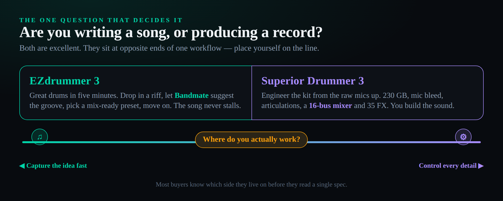
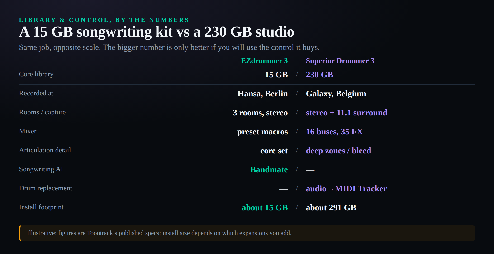
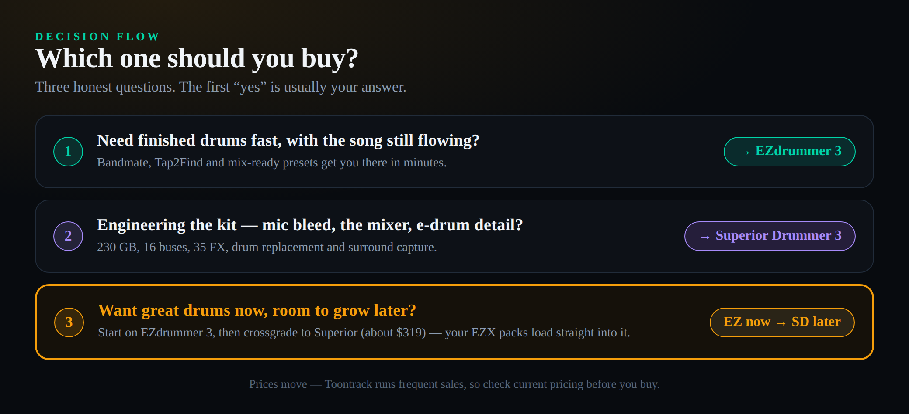

The short answer
Stop asking which one is “better.” EZdrummer 3 and Superior Drummer 3 are both excellent, and they are built to answer two different questions. Are you writing a song, or producing a record? If you want great drums in five minutes — drop in a guitar riff, let Bandmate suggest a fitting groove, grab a mix-ready preset and keep the song moving — that is EZdrummer 3 ($179). If you want to engineer the kit from the raw microphones up — 230 GB of multi-mic recordings, mic bleed, a 16-bus mixer, 35 effects and drum replacement — that is Superior Drummer 3 ($399). The deciding feature for most people is simple: Bandmate, which only EZdrummer 3 has, versus total mixing control, which only Superior Drummer 3 gives you. We score them 9.0 for EZdrummer 3 and 9.2 for Superior Drummer 3 — and that two-tenths edge is about raw ceiling, not about which one is right for you. For most songwriters, the 9.0 is the smarter buy. Prices move — Toontrack runs frequent sales, so check current pricing before you commit.
Search “EZdrummer 3 vs Superior Drummer 3” and you will drown in spec sheets: 15 GB versus 230 GB, seven kits versus seven kits, this many snares versus that many cymbals. The numbers are real, but they bury the one thing Toontrack themselves say plainly and the search results never lead with. These are not two tiers of the same product where you simply buy as much as your wallet allows. EZdrummer 3 is a songwriting instrument; Superior Drummer 3 is a record-production instrument. One is designed to get a convincing drum track into your song before your idea cools off. The other is designed to let you build a drum recording from scratch, with the kind of control a real studio session gives an engineer. Pick the wrong one and you will either fight a giant tool to do a small job, or hit a ceiling on a small tool doing a big one.
This comparison is built around that fork, and we keep returning to it, because every spec on the sheet eventually resolves into “does this help me write faster” or “does this give me more control.” Hold the question in your head — songwriting or production — and the rest of the decision falls into place.
The reframe: a songwriting tool, not a smaller production tool
The trap in every drum-software comparison is treating the cheaper option as a watered-down version of the expensive one. EZdrummer 3 is not Superior Drummer 3 with features removed. It is a different instrument with a different goal, and that goal is momentum. When you are writing, the worst thing a tool can do is make you stop — open a mixer, tweak twelve mic channels, audition forty snares — while the melody you were chasing evaporates. EZdrummer 3 is engineered against that exact failure. Its headline feature, Bandmate, listens to a guitar, piano or bass part you drag in and proposes grooves that actually fit the part’s feel and phrasing. Tap2Find lets you tap a rhythm with your mouse or keyboard and surfaces matching grooves from the library. The presets are mix-ready out of the box, voiced by Michael Ilbert (Coldplay, The Weeknd) so the kit sits in a track without you touching an EQ. The whole design says: capture the idea, finish the part, keep writing.
It helps to know why two instruments from the same company overlap so much yet feel so different. Toontrack built Superior Drummer first, as a professional sampler for engineers, then created EZdrummer to put that same sound quality in front of writers who did not want a console. Today they share a sonic pedigree and a pack ecosystem but aim at opposite ends of a project’s life: EZdrummer at the blank-page stage where momentum is everything, Superior at the mixing stage where control is everything. That shared DNA is exactly why the crossgrade path works so cleanly — you are not switching brands or libraries, you are moving up a ladder the same company built. Understanding that history stops you from reading the price gap as a quality gap; it is a scope gap.
Superior Drummer 3 says the opposite, and means it as a compliment to your patience. It hands you the raw material from a world-class recording session — every microphone, every articulation, the bleed between mics that makes a real kit sound like a real room — and expects you to shape it. That is a gift if you are producing a record and a burden if you are trying to demo a chorus. The same 16-bus mixer that lets a metal producer carve a kick into a track is the same mixer that will swallow an afternoon when all you wanted was a verse groove. Neither behaviour is a flaw. They are two honest answers to two different needs, and the entire decision is figuring out which need is yours this year. If you are still building your wider toolkit, our guide to the best drum machine plugins covers the electronic side that neither of these acoustic-focused instruments is built for.

EZdrummer 3 in depth: speed as a feature
EZdrummer 3 ships with a 15 GB core library recorded by Michael Ilbert at Hansa Studios in Berlin — the room where Bowie and U2 cut records — across seven kits and three sonic spaces, from a tight vocal-booth sound to a big main room. That is a deliberately curated library, not an exhaustive one: enough kicks, snares, toms and cymbals to cover pop, rock, singer-songwriter, soul, hip-hop, country and a credible swing at metal and EDM, without the paralysis of endless choice. The point is not to give you every drum ever recorded; it is to give you a good one fast.
The features all serve momentum. Bandmate is the genuine differentiator and the single biggest reason a songwriter chooses EZdrummer 3 over anything else: drag in your riff and it returns groove suggestions that match, which collapses the “what beat goes under this” problem from twenty minutes of browsing into a few clicks. The onboard Grid Editor lets you draw or nudge hits when a suggestion is close but not perfect. The Song Track stitches verse, chorus and fill sections into a complete arrangement without leaving the plugin. And because the presets are already mixed, you can drop a finished-sounding drum part into a session and decide later whether it needs more attention. If it does, the techniques in our guide to mixing drums apply just as well to an EZdrummer bus as to a recorded kit.
Where EZdrummer 3 stops is exactly where its philosophy stops. You get a friendly mixer with effect macros, not a full multi-bus console. You get the kits as voiced, not raw multitrack mics you can rebalance from scratch. You can shape, sweeten and re-preset, but you cannot rebuild the sound from the microphone up — and for a songwriter, that ceiling almost never gets reached, because by the time you would want that control you are no longer writing, you are producing, and that is a different tool. EZdrummer 3 also works beautifully with electronic drum kits, mapping the major brands so an e-drummer can play in naturally; it is a common and excellent first acoustic-drum instrument for anyone moving up from stock sounds.
It helps to picture a real EZdrummer 3 session, because the speed is not a marketing claim — it is a sequence of removed decisions. You drag a scratch guitar take onto Bandmate, pick from the grooves it proposes, drop the closest one onto the Song Track, and duplicate it into a verse-chorus-verse shape in under a minute. From there Tap2Find or the built-in browser fills in transitions, the Grid Editor nudges a hit that lands a hair early, and a single mix-ready preset gives you a kick-snare balance you would otherwise spend twenty minutes dialling in. Nothing about that loop asks you to think like an engineer, which is the entire design intent. When the demo is good enough to share, you drag the MIDI straight to your DAW timeline and keep arranging the song.
That curation is also why EZdrummer 3 pairs so naturally with a stock-plugin workflow. Because the kits arrive pre-balanced, you can often finish a writing demo using only your DAW’s built-in tools — the same approach we lay out in our guide to mixing with stock plugins — and never open a third-party chain at all. EZdrummer is closer in spirit to a focused, opinionated instrument than to an open, build-it-yourself sampler like Battery 5; it trades breadth for the confidence that whatever you grab will already sound like a record. For someone whose real job is to write the song, that confidence is worth more than another forty snares you have to audition.
Superior Drummer 3 in depth: a studio in a plugin
Superior Drummer 3 is a different order of thing. Its core library is over 230 GB of raw, largely unprocessed audio recorded by George Massenburg — one of the most respected engineers alive — at Galaxy Studios in Belgium, in a hall so quiet and well-built that it was captured in stereo and up to 11.1 surround. You get seven kits, twenty-five snares, sixteen kicks, deep cymbal and percussion sets, and more than 350 electronic and drum-machine samples on top. Crucially, you get the individual microphones: close mics, overheads, room mics and the bleed between them, the same channels an engineer would have on the console during a real session. That is what “raw” means here, and it is the whole point.
The control matches the library. Superior Drummer 3’s mixer is a true 16-bus console with 35 studio-grade effects, so you route, blend and process the kit exactly as you would a recorded drum take — parallel compression on a room bus, a saturated smash channel, surround placement, the works. The articulation detail is far deeper than EZdrummer’s: more hi-hat positions, more cymbal zones, rim and stick variations that make programmed parts read as performed. The integrated Tracker converts audio to MIDI, which turns Superior Drummer 3 into a serious drum replacement tool — feed it a weak recorded snare and trigger a Galaxy Studios snare in its place. You can import and stack your own samples, build custom kits, and search a large MIDI groove library. If you came up programming beats and want to understand how a recorded kit is actually mic’d, pairing Superior Drummer 3 with our guide to recording drums is one of the fastest ways to learn what each microphone contributes.
In practice the drum-replacement workflow is what sells producers on Superior Drummer 3, so it is worth spelling out. You drop a recorded drum track into the Tracker, it detects the hits and converts them to MIDI, and you assign each detected voice — kick, snare, toms — to a Galaxy Studios articulation. Suddenly a thin, badly-tuned live snare is triggering a world-class one in perfect sync, blended to taste against the original. That single feature can rescue a recording session, and EZdrummer 3 cannot do it at all. Add the deep MIDI groove library, the ability to import and stack your own one-shots from your wider sample library, and the Song Creator for arrangement, and you have not a drum plugin but a small drum-production studio that happens to live inside your DAW.
The mixer rewards the same instincts you would bring to a real console. Route the room mics to their own bus and crush them with parallel compression for weight; print a saturated “smash” channel and blend it under the close mics; place the overheads in surround for a film cue. None of that is sweetening — it is mixing, inside the instrument, before the kit ever reaches your DAW’s channel strip. That is the practical meaning of “a studio in a plugin,” and it is also why Superior Drummer 3 is genuine overkill for anyone who just wants a believable groove under a chorus.
All that power has an honest cost beyond the price tag, and it is the thing reviews underplay: Superior Drummer 3 asks for roughly 290 GB of fast storage for a full install and a learning curve to match. The mixer that gives you total control is the mixer you have to learn, and the 230 GB of options is 230 GB you can get lost in. For a producer building records, that is time well spent. For a songwriter chasing a chorus, it is friction in the wrong place. Superior Drummer 3 is the more capable instrument by a wide margin — the question is whether your work needs that capability or merely admires it.
Head to head, axis by axis
Sound out of the box. EZdrummer 3 wins on instant gratification: its presets are mixed to drop straight into a track. Superior Drummer 3’s raw library can sound better than anything EZdrummer produces — but only after you mix it, because it ships deliberately unprocessed. If you want a finished sound in thirty seconds, EZdrummer; if you want the best possible sound after an hour of mixing, Superior.
Library depth. No contest on raw size: 15 GB versus 230 GB. But depth is only an advantage you can spend. EZdrummer’s curated library is a feature for a writer who would otherwise stall choosing between forty snares; Superior’s vast library is a feature for a producer who needs the exact snare for this record. Both libraries expand through Toontrack’s pack ecosystem, which we cover below.
Editing and control. This is Superior Drummer 3’s home turf and the clearest gap between them. EZdrummer offers preset macros and a friendly mixer; Superior offers a 16-bus console, 35 effects, per-mic control, articulation editing and sample import. If “control” is a word you use about your drums, you want Superior. The same mindset that makes you reach for surgical EQ on drums or parallel compression is the mindset Superior Drummer 3 is built for.
Songwriting features. This is EZdrummer 3’s home turf and just as clear a gap the other way. Bandmate has no equivalent in Superior Drummer 3. Tap2Find exists in both, but the riff-to-groove suggestion engine that makes EZdrummer feel like a co-writer is EZ-only. If you start from a guitar part and want the drums to come to you, that is a decisive advantage.

Mixing and effects. Superior’s 16-bus mixer and 35 effects are a genuine mixing environment; EZdrummer’s effect macros are sweetening, not mixing. For surround, parallel busses, and drum-bus processing inside the instrument, Superior is in a different league.
CPU, RAM and disk. EZdrummer 3 runs on almost anything and installs in around 15 GB. Superior Drummer 3 wants roughly 290 GB of fast storage and more RAM headroom; you will lean on its freeze and cache options to keep large kits manageable. For a laptop producer with limited SSD space, this is a real and recurring consideration, not a one-time inconvenience.
E-drum support. Both are excellent with electronic kits and map the major brands for natural playing. Superior edges ahead for serious e-drummers because its deeper articulations — more hi-hat positions, more zones — capture nuance that a detailed player will feel. For casual e-drumming, EZdrummer is more than enough.
Playability and MIDI grooves. Both ship enormous MIDI groove libraries played by real drummers, and both let you audition grooves against your song’s tempo before committing. The difference is what happens when a groove is almost right: in EZdrummer you nudge it in the Grid Editor and move on, while in Superior you can re-voice the exact articulation — swap a closed hat for a tip-of-stick ride, change which part of the cymbal is struck — so the part reads as performed rather than programmed. For writers, EZdrummer’s grooves are a finished foundation; for producers, Superior’s are raw material to refine.
Workflow and learning curve. This axis is easy to undersell and it matters more than any single spec. EZdrummer 3 is something you are productive in within an hour; Superior Drummer 3 is something you keep discovering for months. Neither is wrong, but they cost you different things. The friendly tool costs you a ceiling you may never reach; the deep tool costs you time up front and the standing temptation to keep tweaking instead of finishing. Be honest about which of those two costs your projects can actually afford this year.
Expansions. Both grow through Toontrack packs — EZX expansions for EZdrummer, SDX expansions for Superior — and here is the detail that matters: Superior Drummer 3 can load EZX packs too, while EZX packs are essentially cut-down SDX libraries (roughly 4–5 GB versus an SDX’s 50 GB-plus). So an EZdrummer library is not stranded if you move up; it follows you into Superior. That asymmetry is the backbone of the upgrade path we cover next.
The real cost: base price, expansions and storage
The sticker prices — about $179 for EZdrummer 3 and about $399 for Superior Drummer 3 at full list, frequently discounted — are only the opening line of the real math, and almost no comparison says so. The long-run cost difference between these two is not the $220 gap at the register. It is the expansion packs and the storage they demand.
EZX expansions for EZdrummer typically run a modest size and a modest price, and because they are curated and mix-ready, you tend to buy a couple and move on. SDX expansions for Superior Drummer are a different commitment: a single SDX can be 50 GB or more of raw multi-mic recordings and priced accordingly, and the kind of producer who buys Superior tends to keep buying SDX libraries, because that is the whole appeal. So the honest total cost of ownership looks like this: EZdrummer 3 plus a couple of EZX packs stays a few hundred dollars and a manageable footprint, while Superior Drummer 3 plus a growing SDX collection can become a four-figure investment occupying a substantial fraction of a fast drive. Budget for the ecosystem, not just the entry fee — and budget for the SSD as seriously as the software, because a 230 GB core plus several 50 GB SDX libraries is a storage decision, not a footnote.
This is also where “value” stops being a single number. For a songwriter who will buy the base instrument and two packs, EZdrummer 3 is dramatically better value because it does the job for a fraction of the cost and disk. For a producer who will build a library of SDX expansions and use the mixer daily, Superior Drummer 3 is better value despite costing far more, because the cheaper tool simply cannot do that work. The cheaper sticker is not always the cheaper tool for you — it depends entirely on the job.
A concrete example makes the gap real. A singer-songwriter buys EZdrummer 3 on sale, adds a pop and an Americana EZX, and is done at roughly $250 and about 25 GB — a one-time, low-footprint decision. A metal producer buys Superior Drummer 3, then the SDX libraries that make the genre work — a couple of metal-focused expansions at 50–90 GB each — and is comfortably past $700 and several hundred gigabytes within a year, before counting the larger SSD the install effectively requires. Both spent their money well for the job they do. The error is a writer drifting into the producer’s budget by reflex, paying for a library and a console that a finished demo never needs.
The upgrade path: start cheap, grow later
Here is the move that resolves the most common version of this dilemma — “I want great drums now but I might get serious later.” You do not have to choose forever today. Start on EZdrummer 3, write with it, and if you later find yourself wanting the mixer, the articulations and the raw mics, Toontrack offers a crossgrade to Superior Drummer 3 — recently around $319 — that credits much of your EZdrummer purchase toward the bigger instrument. Better still, the EZX expansion packs you bought load straight into Superior Drummer 3, so nothing you spent on the EZdrummer ecosystem is wasted when you move up. You climb the ladder; you do not throw away the lower rungs.
That path is the right default for a large share of buyers, and the decision diagram below lays it out. It means the “safe” choice is rarely to overbuy. If you are not certain you need Superior Drummer 3’s control, buying EZdrummer 3 first is low-risk: you get a finished-sounding instrument immediately, you learn whether you actually reach for deep control, and you keep a clean, credited route up if you do. Overbuying, by contrast, means paying four hundred dollars and a 290 GB install for a mixer you may never open. When the cheaper option is also the reversible option, it deserves the benefit of the doubt.
Who should buy which
The songwriter or demo producer. Buy EZdrummer 3. Your job is to get a convincing drum part under an idea before the idea fades, and Bandmate plus mix-ready presets is the fastest path to that in any software. You will almost never hit its ceiling, and if you do, the crossgrade is waiting. This is the largest group of buyers and the clearest recommendation in the whole comparison.
The rock or metal producer making finished records. Buy Superior Drummer 3. You need the raw mics, the bleed, the articulations and the 16-bus mixer to make programmed drums sit in a dense mix as if they were tracked live, and you will use drum replacement on real recordings constantly. The learning curve and the storage are the price of admission to work you are doing anyway. Pair it with solid technique — even great samples need tuned, in-key drums to sit right — and it is the most capable acoustic-drum instrument available.
The mixing engineer. Lean Superior Drummer 3, primarily for drum replacement and the mixer. If clients send you weak drum tracks, the Tracker’s audio-to-MIDI conversion lets you trigger Galaxy Studios samples in place of a bad snare, and the console gives you somewhere to do the work. EZdrummer cannot replace drums this way.
The electronic drummer. Either, leaning Superior if you are a detailed player. Both map e-kits well, but Superior’s deeper articulations reward nuance — ghost notes, hi-hat positions, cymbal zones — that a casual player will not notice and a serious one will. If your e-drumming is for writing and practice, EZdrummer is plenty; if it is for performance-grade recording, Superior captures more of what you play. Beatmakers crossing over from sampled kits will find both a step up from stock sounds, much as our trap drum and beatmaking guides assume you have a quality kit to start from.

And the deciding flip, stated plainly: our 9.2-to-9.0 verdict gives Superior Drummer 3 the higher raw ceiling, but it inverts the moment you tell us you are writing songs, not engineering records. For that producer — and that is most producers most of the time — Superior’s biggest advantages become friction, EZdrummer’s speed becomes the thing that matters, and the cheaper instrument is the right instrument. Answer the songwriting-or-production question honestly and you will not need the overall score at all.
The verdict: scoring it honestly
We score both instruments across the axes that decide a real purchase, then weight the overall toward raw capability — which is why Superior Drummer 3 edges it, 9.2 to 9.0. Read that margin correctly: it measures ceiling, not fit. Superior is the more powerful tool; EZdrummer is the better tool for the most common job. The amber bars mark each instrument’s real weakness — EZdrummer’s limited deep control, Superior’s footprint — and those are the axes to weigh against your own work, not the overall.
| Axis | EZdrummer 3 | Superior Drummer 3 |
|---|---|---|
| Sound out of the box | 9.2 | 9.0 |
| Library depth | 8.4 | 9.6 |
| Editing & control | 7.8 | 9.4 |
| Songwriting (Bandmate) | 9.4 | 8.0 |
| Mixing & FX | 7.6 | 9.4 |
| E-drum support | 8.8 | 9.2 |
| CPU / disk footprint | 9.2 | 7.6 |
| Value (price-to-need) | 9.2 | 8.8 |
| Overall | 9.0 | 9.2 |
Put it to the test before you buy
Three checks that turn this comparison into a decision you can act on today.
- Open the last three projects you started and ask what you needed drums to do in each: carry an idea forward, or be engineered into a finished record.
- If the honest answer is “get a part down fast” in most of them, write “EZdrummer” on a note; if it is “build the drum sound,” write “Superior.”
- That one word is the biggest input to your choice — every spec below it is a tiebreaker, not the decision.
- Look at how much free space you have on a fast SSD — not your boot drive’s last few gigabytes, but real working space.
- EZdrummer 3 needs about 15 GB; Superior Drummer 3 wants roughly 290 GB for a full install, before any SDX expansions.
- If buying Superior would mean juggling storage or buying a drive, fold that cost and hassle into the decision now, not after checkout.
- Write the base list prices side by side: EZdrummer 3 about $179, Superior Drummer 3 about $399 (and note today’s sale price — Toontrack discounts often).
- Add the two or three expansion packs you would realistically buy in the first year — remember an SDX can be 50 GB-plus, an EZX a few gigabytes — and add a drive if Superior forces one.
- Compare the ecosystem-adjusted totals, then sanity-check against whether you will actually open a 16-bus mixer; if you will not, the cheaper total is also the better tool.